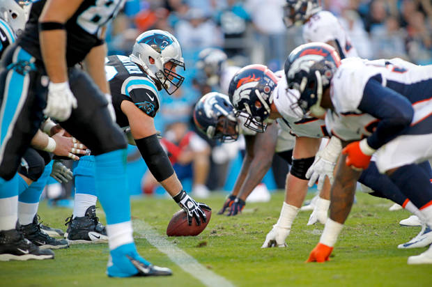
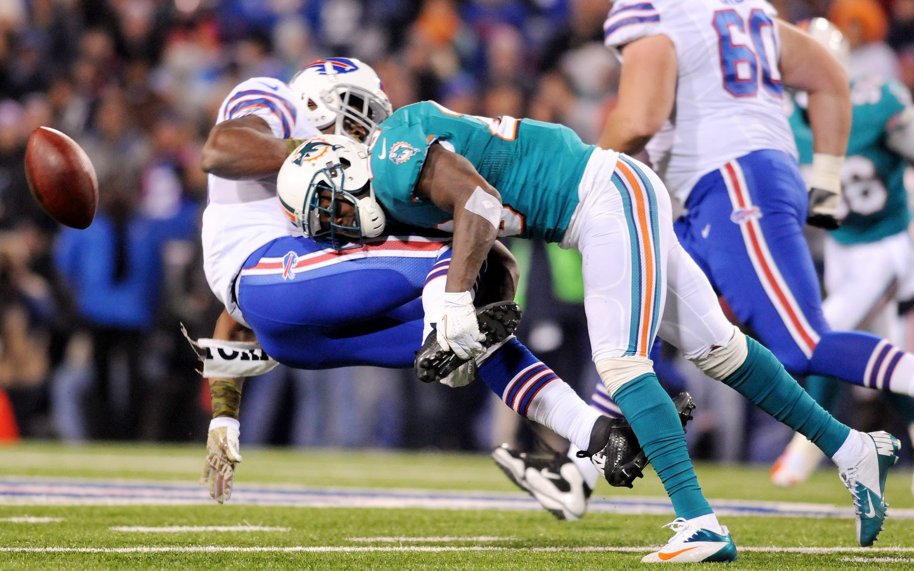

Capitals feel they're entering the playoffs in a better place than a year ago
Like last season, the Washington Capitals are opening the playoffs with home-ice advantage guaranteed throughout the postseason after posting the league's best regular-season record. But if you ask players, the team is entering its first-round matchup in a completely different place than it was a year ago. The Capitals lost five of their last seven games before the playoffs last season. This year, Washington won 11 of its final 14. The Capitals clinched the top overall seed with 10 games to go last season, and their lead was so large that it was really just a formality. Just two games remained this season when Washington officially clinched everything possible, forcing the team to continue fighting for prime position. "You're going to remember what's happened last year, yeah we won, we have the same success all season, the regular one, but not success in the playoffs," captain Alex Ovechkin said. "Ithink this team is more concentrated right now on getting success in the second season than in the first." A competitive Metropolitan Division ultimately helped the Capitals. Going into December, Washington was struggling to score and though its record wasn't bad, the team had fallen behind the Columbus Blue Jackets, Pittsburgh Penguins and New York Rangers in the division standings. Even when the Capitals went on a run, those other teams continued winning, too, making it a challenge for Washington to gain ground. The Capitals' most dominant run was through January and to the team's bye week in mid-February, when Washington had a 17- 2-1 stretch. In that time, Washington was able to move into first place in the division, but it had taken half the season, and the Penguins and the Blue Jackets still weren't far behind. "We didn't start out good and we weren't in good position at all for a while there," defenseman Karl Alzner said. "It seemed like no matter what we did, we couldn't catch those other teams. It was nice that we had to really work hard and battle. Ithink we got to see a really good side of this team off the ice as well as on the ice. We're just a really good group of teammates. It's really fun to be around everybody and we have a really, really high positive attitude. It's pretty fun to be around and it really kind of leeches off into other guys. Yeah, it's a good team." When Washington came out of its five-day bye week, it fell into a slump. The Capitals were 5-6-1 in 12 games after the break, including a four-game losing streak. After its fourth straight loss, a blowout in Anaheim, the team held a 15-minute meeting in the locker room. Defenseman Brooks Orpik was critical, saying players need to make "hockey our first priority and focus a little better than we did on this trip." A division lead that once looked cushy was suddenly nonexistent. The Capitals responded with a strong finish, something they hope now translates into a good start to the postseason. "It might sound ridiculous, but I really think that four-game losing streak was a blessing in disguise," forward Daniel Winnik said. "Ithink it put us on our heels and realize, ‘Holy crap, we're in a playoff race here,' and Ithink that's what made us play as well as we did down the stretch knowing we had to win games to get the Metro, to get the Presidents' Trophy, whatever you want. Ithink going forward in the playoffs this year we're much more well-prepared for playoff-style hockey." Said Alzner: "We're playing with more structure. We were tinkering a lot last year. It was just so relaxed because it ended up being a really long year for us. We just didn't have the killer instinct that we needed to have, but Ithink we still found a way to turn it around pretty good in the first round. ... It's nice that we're playing well and we're structured. Guys are working hard and smart. We really focused on having a guy in good defensive position in the offensive zone. That's really limited odd-man rushes, which has been a thing for us at times this year. So we're seeing a lot of promising things right now."
When this NBA season began, it was supposed to be a six-month long buildup to the first Finals rubber match, between the Golden State Warriors and Cleveland Cavaliers. And, as the regular season closes Wednesday and the playoffs begin this weekend, those teams both remain the favorites to make that feat happen. But coming into the season, the expectation was that the foregone conclusion would remove all the drama from the proceedings, and boredom and drudgery would follow because everyone knew what was going to happen. That couldn't have been farther from the truth, and the biggest reason is this season's race for NBA Most Valuable Player. The MVP race is always a significant story line throughout any season, as one would expect. But this season has been different, because four future Hall of Fame players - LeBron James, Russell Westbrook, James Harden and Kawhi Leonard - are all in the midst of arguably the best seasons of their respective careers. Between the explosion of offense throughout the NBA this season, each of the four players having a narrative arc (James being the best player, Westbrook thriving without Kevin Durant, Harden leading the resurgent Rockets and Leonard pushing the Spurs to the league's second-best record) and each having his fair share of highlight-reel performances, it's the best MVP race in league history. It has even surpassed the 1962 race that's come up so many times this year, one in which Bill Russell won the award ahead of Wilt Chamberlain, who averaged 50 points and 26 rebounds, and Oscar Robertson, who averaged a tripledouble. So, after months of deliberation and internal debate, here are The Washington Post's official picks for the five spots on this year's MVP ballot: 5. Giannis Antetokounmpo, Milwaukee Bucks The top four spots have gotten so much attention, yet the race for the fifth spot on the ballot is equally competitive. Both Chris Paul and Durant have been incredible when healthy this season, but each missed about a quarter of the season with injuries. John Wall and Isaiah Thomas have been equally outstanding, dueling for the honor of being the Eastern Conference's top point guard, while Stephen Curry has only spent the past several weeks playing like he did en route to winning the award by a unanimous vote last year. All of them would be worthy choices, but aren't the choice here. Instead, the fifth spot on this ballot is going to Antetokounmpo, the rapidly ascending superstar forward for the Milwaukee Bucks. It was only a few months ago that Antetokounmpo agreed to a contract extension for a bit below the maximum salary for next season, and had yet to make an allstar team. Now he's blossomed into a bona fide superstar, a terror at both ends of the court who is a three-point shot away from becoming an unstoppable force. As it is, he's averaging 23.1 points, 8.7 rebounds, 5.4 assists, 1.7 steals and 1.9 blocks per game - leading the Bucks in all five categories, becoming just the fifth player in NBA history to lead his team in all five - as he's improved virtually across the board for a fourth straight season. Most impressively, he's doing it all at age 22, and won't turn 23 until December. The best is yet to come for The Greek Freak, and it will be so much fun to watch it all happen. 4. LeBron James, Cleveland Cavaliers From here on out, these top four spots could be divvied up in any order and it would be justified. Frankly, those arguing against that have been part of the frustrating portion of this MVP debate. Part of that is the age we live in, where there has to be a negative reaction to everything, as opposed to simply celebrating the incredible nature of this season, and the performances these guys have all given. Part of it, too, is the desire for each camp to be right, and to see their player lifted to the top of the heap. One of them has to finish fourth, though, and James wound up being the choice. It's easy to take him for granted at this point, given that he's now in his 14th season, is putting up astronomical numbers (26.4 points, 8.6 rebounds and 8.7 assists) and remains the first choice if one could have their pick of anyone in the league to start a team. But for as dominant as James has been, his team has tailed off in recent weeks, and likely won't even finish in first place in the East. In a race where every little bit counts, that turned out to be the line of demarcation. 3. Russell Westbrook, Oklahoma City Thunder There's no question Westbrook has been sensational this season. And his pursuit of becoming the first player since Robertson to average a triple-double over a season, coupled with propping up the Thunder in the wake of Durant's departure, gives him a very compelling and easy-to-spell-out narrative for how he should win the award. That doesn't even factor in Westbrook's remarkable performances in the clutch this season, which Ithink is the most compelling case for him. Westbrook has several factors working in his favor. For many people, the triple-double is the reason he should win the award, full stop. But in a season where offenses are exploding like never before, it's hard to honestly look at Westbrook's 31.9 points, 10.7 rebounds and 10.4 assists and say that it's dramatically better than Harden's 29.3 points, 8.1 rebounds and 11.3 assists. Then there are the preseason expectations surrounding the Thunder. I was lower on the Thunder than virtually everyone else, making one of my 10 bold predictions that they would miss the playoffs (this, like most bold predictions, proved to be too bold). But Oklahoma City was projected by many to finish in the mid-40s in wins and finish somewhere in the middle of the Western Conference playoff picture. Now, the Thunder have only managed to do that because of Westbrook's ridiculous clutch performances, including his remarkable game-winner Sunday against Denver to cap his record-breaking 42nd triple-double of the season. But Oklahoma City is performing right about in line with where it was supposed to be - not well above it, as many have argued in recent weeks. There's also the fact that, while detractors say Westbrook's team is hurting him, it actually isn't set up all that dissimilarly from how Harden's is set up. In many ways, this year's Thunder are a souped-up version of the 2001 Philadelphia 76ers: a team with one phenomenal scorer surrounded by droves of athletic players who rebound (or, in many cases, allow Westbrook to grab uncontested rebounds) and play defense. This is a big factor in Oklahoma City's success in close games, as Westbrook has been free to shoot every time down the court, and his ability to create his own shot allows Thunder Coach Billy Donovan to surround him with stout defenders to help slow down the opposition. That's not to say Westbrook hasn't been sensational; he has been. That's also not to say that Westbrook shouldn't win the award; if he does, then it will be well deserved, and a fitting tribute to a thrilling season. But in a season where so many things are equal across the board, the fact that Westbrook's team is going to wind up 8 to 10 wins behind Houston, 15 or so behind San Antonio and isn't expected to make it out of the first round tips the scales ever so slightly against him, and leaves him third on this ballot. 2. James Harden, Houston Rockets Many of the arguments for Harden and Westbrook are similar. Harden has been equally terrific, as the stats above indicate, along with another: he is the first player to average 25 points and create 25 points per game via assists in a season. He also has been a terrific catalyst for Houston's turnaround, seamlessly fitting into Mike D'Antoni's system and running it like he's been a point guard all his life, as opposed to a shooting guard converted into one - a part of his play this season that has been undervalued. But, like Westbrook, Harden has a team that's tailor-made to his skill set around him, with a fleet of shooters and able defenders to hit with pinpoint passes and make up for his less-than-stellar individual defense. So why is Harden ahead? Well, the fact that his team is several spots ahead in the standings after many (though not me) predicted the reverse is part of it. So, too, is the way he's had to change his game and adapt to a new position, even if he is a guy who is used to having the ball in his hands. Anyone who saw Harden play last season knows he has gone from one of the guys who was hardest to watch in the league to one of the easiest in the span of a single year, and that is a credit to him buying into what D'Antoni wanted him to do. And, in most years, that would be enough to tip the scales in his favor. This year, though, isn't one of them.
1. Kawhi Leonard, San Antonio Spurs Wait a minute. Leonard? Not Harden and Westbrook, the two names that have dominated this conversation for the past few months? Yes. Leonard. Here's the case. The first part is obvious: While James, Westbrook and Harden are largely regular season designated hitters, contributing only on offense, Leonard remains a terrifying defensive presence, and is the best perimeter defender in the league by leaps and bounds. That should count for something. So, too, should Leonard's insane efficiency. He dominates the ball, closing in on a 30 percent usage rate while rarely turning the ball over and posting a 61 percent true shooting percentage. But the true bulwark of the case is in what surrounds Leonard in San Antonio. Yes, they are the Spurs, and yes, they still have Gregg Popovich as their coach. This, though, is not your father's Spurs team. LaMarcus Aldridge, who was supposed to be the team's second all-star behind Leonard, has taken a step backward. Danny Green is a perfectly acceptable starting shooting guard, but Tony Parker has plummeted to the bottom of the starting point guard ranks in the NBA. Pau Gasol has been rightly relegated to the bench in favor of Dewayne Dedmon - a nice player, but who is averaging career highs of 5.2 points and 6.5 rebounds in 17 minutes a night. And yet, despite all of that - plus a bench featuring Patty Mills, Gasol, David Lee and 38-year-old Manu Ginobili - San Antonio is on pace to win more than 60 games and have the second-best record in the NBA. Now, this isn't a home for the "wins are the only thing that matter" argument. But it's hard to objectively look at this Spurs team and say that it's demonstrably better than the rosters Harden and Westbrook have around them. Leonard has led his roster to seven more wins than Rockets and 15 more than that Thunder. And in a debate over what's valuable, it's hard to find a more valuable number than that.